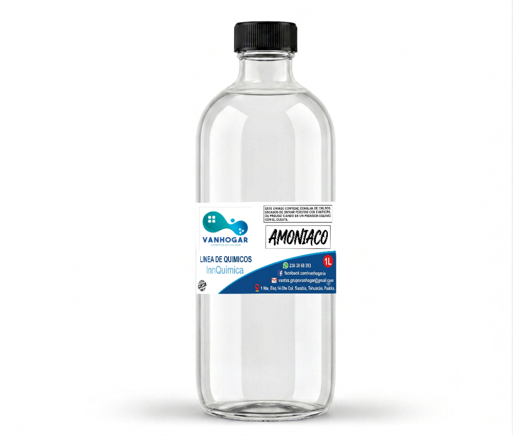

Productos complementarios para limpieza, mantenimiento, desinfección y uso especializado en el hogar, negocio o industria.
Recibe una muestra sin costo y conoce la calidad de nuestros productos especializados.